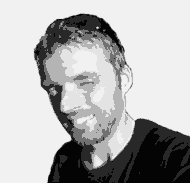
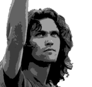
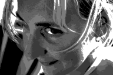
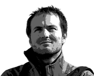
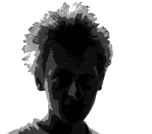

Důležité Perzóny
Bára Hrdinová
Zážitkovku jsem si již kdysi dávno trénovala na kurzech angličtiny, které jsem lektorovala, ale mým prvním opravdovým zážitkovým kurzem byla lipnická Tramtárie (2004), která mi otevřela bránu do úplně jiného světa. Už tehdy jsem měla nakročeno podívat se na zážitkovou i z druhé strany, tedy z té instruktorské. Chvíli jsem kolem tohoto nápadu překračovala, a nechala ho volně plynout kolem mě, až si mě sám našel. A to dokonce víc než jsem chtěla, takže je ze mě takový zážitkový schizofrenik - pohybuji se mezi pražskou Lipnicí a brněnskými instruktory.
A proč takhle trávím drahocenný volný čas? Inspirují mě schopní a zkušení lidi, lidi s nápady, lidi, který baví dělat něco pro lidi. Jak z ničeho či z bláznivého nápadu může vzniknout báječná myšlenka, hra, program, kurz. A jak takový kurz, na kterém se podílíte, mění věci okolo vás, v účastnících, ve vás…
Dan Franc
Zážitkovka ke mne kdysi přišla omylem jako k netýmovému, introvertnímu, intelektuálně-nesportovnímu indoorovému post-pubescentovi s Modrou knížkou. Strávili jsme pak ale spolu ve zběsilém tanci pěkných pár let po outdoorech několika kontinentů. Teď už jsme dotančili a tak si o ní už zase introvertně, nesportovně, indoorově a intelektuálsky jen tak píšu knížky. A kecám do tohoto zážitkového tance jiným =)
Zuzka Ouhrabková
Za to že u mně propuklo postižení zážitkovkou asi může knížka Hoši od Bobří řeky, puberta neslučitelná s dívčím skatuským oddílem a ukrutně povedené léto 1996 na hradě Lukov. Když jsem věděla, že budu na škole v Brně, přihlásila jsem se na prázdninovku Civilizace, vnutila se do IS kursu a od té doby se to veze.
Ondráš Přibyla
Jeden z mých oblíbených citátů:
"Nezáleží na tom co víš, záleží na tom co děláš."
Zážitkovka je pro mě metoda, která se více zabývá tím děláním než věděním a člověk tak snadno zjišťuje, že sice velmi dobře ví, ale to co dělá tomu úplně neodpovídá. A mám strašně rád ty chvíle, kdy se ztuhlá šeď mysli studenta či účastníka mění v barevnou inspiraci (a je mi celkem jedno jde-li právě o pochopení krásy Biot-Savartova topologického invariantu, o flow při hře či o procitnutí při review.)
A jak jsem se k zážitkovce dostal? Myslím, že spíše ona sama si našla cestu ke mě - já v tomhle procesu moc iniciativní nebyl.
Hanka Komínková
K zážitkovce a Instruktorům Brno jsem se dostala asi před dvěma a půl lety, kdy jsem vedla řadu let turisťák a chtěla věci dělat trošku jinak a poznat jiné lidi. První prázdninovkou byly Cesty Necesty, po kterých jsem si i já našla s konečnou platností svou cestu k Instruktorům :o) Zjištění, že zdánlivě nemožné věci přeci nejsou žádný problém. Navíc mě fascinuje skupinová dynamika a myslím, že mám ještě co odhalovat na jejich tajích.
Zážitkovku s Instruktory dělam, protože můžu být součástí něčeho, kde není otázkou Jak, ale Kdy. Kde se lidi dokažou vzájemně podpořit i vyhecovat k nejrůznějším šílenostem a kde vám to, že stojíte na hlavním nádraží v neoprenu s pálavou a pádly v ruce připadne vlastně docela normální věc. A navíc, baví mě lidi motivovat, a připravovat akce, které pak jsou obohacením nejen pro ně, ale i pro mě, a odkud zase odjíždím "dobytá".
Zbyšek Podhrázský
Zkratky ZP mě už nějakou dobu vinou mým životem. A to v několika různých významech. Ať už jako životní prostředí nebo jako zážitková pedagogika. A to druhé je ještě zajímavější než první.
K té druhé jsem se dostal před 5ti lety absolvováním Instruktorského kursu a hned od té doby, co jsem ji byl schopen pojmenovat, mě chytila a už nepustila. Je jen málo jiných možností, kde se můžete ztvárnit, popustit uzdu své fantazii a kreativitě a u toho rozvíjet sebe i ostatní.
Sven Dražan
Buď teď a tady.
K zážitkovce jsem se dostal díky Ivoši Cicvárkovi, který pro naši třídu udělal skvělý adapťák. Protože jsem nikdy nic podobného nezažil, byl to pro mě obrovský impulz začít se o něco podobného pokoušet. Během dalších let jsem absolvoval několik instruktorských akcí a dvě prázdninovky, nakonec jsem se vloudil do minulého IS kursu.
Zážitkovku dělám, protože ji pokládám za jednu z mála smysluplných věcí ve svém životě a protože mě seznámila se spoustou skvělých lidí. Je to pro mě způsob jak zhmotnit svoje myšlenky a názory a podělit se o ně s ostatními.




